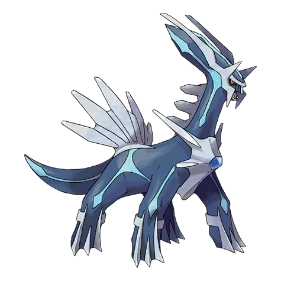
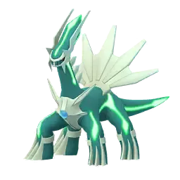

🧭 Quick Navigation
📖 Introduction
Dialga’s Steel and Dragon typing makes it one of the toughest Legendary raids, requiring strategic selection of Fighting and Ground‑type counters to deal consistent damage.
Dialga is one of the most iconic Legendary Pokémon in Pokémon GO. As the Pokémon that controls time, Dialga has extremely strong defensive typing thanks to its Steel and Dragon combination. This gives it many resistances to common attack types, making it a challenging raid boss for trainers who are not prepared.
Despite its strong defenses, Dialga has two important weaknesses that trainers can exploit: Fighting and Ground-type attacks. By using powerful counters with these types, players can defeat Dialga efficiently even with smaller raid groups.
Dialga is extremely valuable for:
- Raid attacking
- Master League PvP
- Legendary collection
This guide explains Dialga’s weaknesses, the best Pokémon counters, optimal raid strategies, and catch CP ranges to help trainers maximize their chances of success in Legendary Raid battles.
Raid Difficulty
Dialga is a challenging 5‑Star Legendary raid boss. Depending on trainer level and counters, a group of 2‑4 experienced players can complete the battle, while larger groups make it easier to win quickly.
About Dialga
Dialga is known as the Temporal Pokemon and controls time in the Pokemon universe. Because of its Steel and Dragon typing, Dialga has many resistances and only two weaknesses.
📊 Dialga Stats
| Type | Dragon / Steel |
| Max CP | 4565 |
| Weather Boost | Windy, Snowy |
| Shiny | Yes |
| Base Attack | 275 |
| Base Defence | 211 |
| Base Stamina | 205 |
Dialga has very high attack and strong bulk, which makes it both a dangerous raid boss and a powerful Pokémon to use after catching it.
🎯 Catch CP & 100% IV
After defeating Dialga in the raid, you will encounter it for capture.
CP Range:
- No Weather Boost: 2,217-2,307 CP
- Weather Boost: 2,771-2,884 CP
100% IV:
- 2307 (Normal)
- 2884 (Weather Boosted)
Use:
- Golden Razz Berry
- Curveball Excellent Throws
⚠️ Dialga Weaknesses
Dialga's Steel/Dragon typing gives it several resistances, but it also has a few important weaknesses that trainers can take advantage of.
| Category | Details |
|---|---|
| ❌ Weak To: |
 Fighting • Fighting •
 Ground Ground
|
| ✅ Resistant / Immune To: |
 Normal • Normal •
 Flying • Flying •
 Poison • Poison •
 Rock • Rock •
 Bug • Bug •
 Water • Water •
 Steel • Steel •
 Grass • Grass •
 Psychic • Psychic •
 Electric Electric
|
Notes: Because Dragon-type moves are resisted by its Steel typing, using Dragon attackers is not recommended. Instead, focus on Fighting or Ground-type Pokémon for super-effective damage.
🗡️ Best Counters for Dialga
The best way to defeat Dialga is to use Fighting or Ground-type Pokémon.
🥊 Fighting-Type Counters (Top Priority)
Fighting-type Pokémon are generally the best option against Dialga. They deal super-effective damage and can output strong DPS with moves like Counter combined with Dynamic Punch or Aura Sphere.
- Use fast moves like Counter
- Charged moves such as Dynamic Punch maximize damage
- Mega Fighting Pokémon provide team-wide damage boosts
- Lucario: (Force Palm / Aura Sphere)
- Terrakion: (Double Kick + Sacred Sword)
One of the strongest Fighting attackers with huge damage output.
High DPS Fighting attacker ideal for raids.
🌍 Ground-Type Counters (Strong Alternative)
Ground-type attackers are also very effective. High-DPS Ground Pokémon using Mud Shot and Earthquake can defeat Dialga quickly, especially in favorable weather.
- Primal Groudon: (Mud Shot / Precipice Blades)
- Excadrill: (Mud Slap / Drill Run)
- Landorus: (Mud Shot / Earthquake)
Ground typing gives strong super-effective damage.
Strong Ground attacker with solid durability.
Why these counters work
Ground-type Pokémon deal super effective damage against Dialga's Steel typing. Pokémon like Garchomp and Primal Groudon are especially powerful because they have high attack stats and strong Ground-type charged moves.
Fighting-type Pokémon such as Lucario and Conkeldurr are also good options because Fighting attacks are super effective against Steel-type Pokémon.
🏆 Best Regular Counters
Regular pokemon that amplify the right types give you a powerful edge. Below are top Regular counters with short notes on why they excel.
| Pokémon | 🗡️ Fast Moves | 💥 Charged Moves | 🔄 Elite Moves | 🏆 Best Moves | 🧪 Why This Counter Works |
|---|---|---|---|---|---|
| Lucario | Counter / Bullet Punch | Close Combat / Power-Up Punch / Aura Sphere / Shadow Ball / Flash Cannon / Meteor Mash / Blaze Kick / Thunder Punch | Force Palm | Counter and Close Combat | Fighting-type Counter and Close Combat deal super-effective damage to Dialga’s Steel typing while resisting Dragon moves. |
| Terrakion | Double Kick / Smack Down / Zen Headbutt | Close Combat / Earthquake / Rock Slide | Sacred Sword | Smack Down and Earthquake | Fighting-type coverage hits Steel weakness hard, and its strong Attack stat allows consistent high DPS. |
| Landorus | Mud Shot / Extrasensory | Superpower / Earthquake / Bulldoze / Stone Edge | Sandsear Storm | Extrasensory and Sandsear Storm | Ground-type moves like Sandsear Storm hit Dialga’s Steel typing super effectively and benefit from high base attack. |
| Keldeo(Resolute) | Low Kick / Poison Jab | Close Combat / Sacred Sword / X-Scissor / Aqua Jet / Hydro Pump | None | Poison Jab and Hydro Pump | Fighting-type Sacred Sword deals super-effective damage to Steel typing, making it a reliable counter. |
| Groudon | Mud Shot / Dragon Tail | Earthquake / Fire Blast / Solar Beam | Precipice Blades / Fire Punch | Dragon Tail and Solar Beam | Ground-type Earthquake and Precipice Blades exploit Dialga’s Steel weakness for heavy super-effective damage. |
| Primal Groudon | Mud Shot / Dragon Tail | Earthquake / Fire Blast / Solar Beam | Precipice Blades / Fire Punch | Dragon Tail and Solar Beam | Primal boost enhances Ground-type damage for the team while dealing massive super-effective Steel damage. |
| Urshifu Single Strike | Sucker Punch / Rock Smash / Counter | Close Combat / Brick Break / Dynamic Punch / Payback | None | Rock Smash and Close Combat | Strong Fighting-type moves like Close Combat deal super-effective damage against Steel typing. |
| Urshifu Rapid Strike | Waterfall / Rock Smash / Counter | Close Combat / Brick Break / Dynamic Punch / Aqua Jet | None | Rock Smash and Close Combat | Fighting-type damage hits Dialga’s Steel weakness and provides strong consistent raid DPS. |
| Excadrill | Mud Slap / Mud Shot / Metal Claw | Earthquake / Drill Run / Scorching Sands / Rock Slide / Iron Head | None | Mud Slap and Earthquake | Mud Slap and Earthquake deliver powerful Ground-type super-effective damage against Steel typing. |
| Blaziken | Counter / Fire Spin / Ember | Focus Blast / Aura Sphere / Brave Bird / Overheat / Blaze Kick | Stone Edge / Blast Burn | Counter / Fire Spin and Overheat | Counter and Focus Blast exploit Steel weakness while delivering high offensive pressure. |
| Kartana | Air Slash / Fury Cutter / Razor Leaf | Sacred Sword / Aerial Ace / X-Scissor / Leaf Blade / Night Slash | None | Razor Leaf and Leaf Blade | High attack stat allows strong neutral damage, though it lacks direct type advantage. |
| Keldeo(Original) | Fire Fang / Dragon Breath | Stone Edge / Overheat / Draco Meteor / Crunch | Fusion Flare | Fire Fang and Overheat | Fighting-type moves provide super-effective Steel damage, making it a viable alternative attacker. |
👤 Best Shadow Counters
Shadow pokemon that amplify the right types give you a powerful edge. Below are top Shadow counters with short notes on why they excel.
| Pokémon | 🗡️ Fast Moves | 💥 Charged Moves | 🔄 Elite Moves | 🏆 Best Moves | 🧪 Why This Counter Works |
|---|---|---|---|---|---|
| Shadow Groudon | Mud Shot / Dragon Tail | Earthquake / Fire Blast / Solar Beam | Precipice Blades / Fire Punch | Dragon Tail and Solar Beam | Shadow boost increases Ground-type super-effective damage against Steel typing for massive DPS. |
| Shadow Excadrill | Mud Slap / Mud Shot / Metal Claw | Earthquake / Drill Run / Scorching Sands / Rock Slide / Iron Head | None | Mud Slap and Earthquake | Shadow bonus amplifies Mud Slap and Earthquake, making it one of the strongest Ground attackers. |
| Shadow Blaziken | Counter / Fire Spin / Ember | Focus Blast / Aura Sphere / Brave Bird / Overheat / Blaze Kick | Stone Edge / Blast Burn | Counter / Fire Spin and Overheat | Shadow-boosted Fighting moves hit Steel weakness extremely hard with very high DPS. |
| Shadow Conkeldurr | Counter / Poison Jab | Dynamic Punch / Focus Blast / Stone Edge | Brutal Swing | Counter / Poison Jab and Focus Blast | Counter and Dynamic Punch deal super-effective Steel damage enhanced by Shadow attack boost. |
| Shadow Rhyperior | Mud Slap / Smack Down | Skull Bash / Superpower / Earthquake / Stone Edge / Surf / Breaking Swipe | Rock Wrecker | Mud Slap and Earthquake | Ground-type Earthquake benefits from Shadow attack boost, increasing Steel weakness damage. |
| Shadow Garchomp | Mud Shot / Dragon Tail | Earthquake / Sand Tomb / Fire Blast / Outrage / Breaking Swipe | Earth Power | Dragon Tail and Earthquake / Fire Blast | Ground-type Earthquake and Earth Power deal boosted super-effective damage to Steel typing. |
| Shadow Raikou | Thunder Shock / Volt Switch | Aura Sphere / Shadow Ball / Thunder / Thunderbolt / Wild Charge | None | Volt Switch and Aura Sphere / Shadow Ball / Thunder | Aura Sphere provides Fighting-type coverage that hits Steel weakness while Shadow boost increases output. |
| Shadow Machamp | Counter / Bullet Punch | Dynamic Punch / Close Combat / Cross Chop / Rock Slide / Heavy Slam | Karate Chop / Submission / Stone Edge / Payback | Counter and Close Combat / Stone Edge | Shadow Counter and Close Combat maximize Fighting-type super-effective damage. |
| Shadow Hariyama | Counter / Force Palm / Bullet Punch | Close Combat / Dynamic Punch / Superpower / Upper Hand / Heavy Slam | None | Counter and Close Combat | Shadow Fighting-type damage significantly increases super-effective output versus Steel typing. |
| Shadow Mamoswine | Mud Slap / Powder Snow | Bulldoze / High Horsepower / Stone Edge / Avalanche / Icicle Spear | Ancient Power | Mud Slap and High Horsepower / Stone Edge | Ground-type High Horsepower deals super-effective Steel damage with Shadow boost advantage. |
⚡ Best Mega Counters
Mega pokemon that amplify the right types give you a powerful edge. Below are top Mega counters with short notes on why they excel.
| Pokémon | 🗡️ Fast Moves | 💥 Charged Moves | 🔄 Elite Moves | 🏆 Best Moves | 🧪 Why This Counter Works |
|---|---|---|---|---|---|
| Mega Lucario | Counter / Bullet Punch | Close Combat / Power-Up Punch / Aura Sphere / Shadow Ball / Flash Cannon / Meteor Mash / Blaze Kick / Thunder Punch | Force Palm | Counter and Close Combat | Mega boost increases Fighting damage for the team while dealing strong super-effective Steel damage. |
| Mega Garchomp | Mud Shot / Dragon Tail | Earthquake / Sand Tomb / Fire Blast / Outrage / Breaking Swipe | Earth Power | Dragon Tail and Fire Blast / Earthquake | Mega boost enhances Ground-type damage for all allies while hitting Steel weakness directly. |
| Mega Heracross | Counter / Struggle Bug | Close Combat / Upper Hand / Earthquake / Rock Blast / Megahorn | None | Struggle Bug and Earthquake | Mega Fighting boost strengthens team damage while dealing super-effective Steel damage. |
| Mega Swampert | Mud Shot / Water Gun | Sludge Wave / Sludge / Earthquake / Surf / Muddy Water | Hydro Cannon | Water Gun and Earthquake | Ground-type Earthquake hits Steel weakness and Mega boost increases Ground damage for teammates. |
| Mega Blaziken | Counter / Fire Spin / Ember | Focus Blast / Aura Sphere / Brave Bird / Overheat / Blaze Kick | Stone Edge / Blast Burn | Counter / Fire Spin and Overheat | Mega Fighting boost increases team DPS while exploiting Steel weakness. |
| Mega Latios | Zen Headbutt / Dragon Breath | Aura Sphere / Solar Beam / Psychic / Dragon Claw | Luster Purge | Zen Headbutt and Solar Beam | Provides Dragon-type team boost but mainly deals strong neutral damage due to Steel resisting Dragon. |
| Mega Alakazam | Psycho Cut / Confusion | Focus Blast / Shadow Ball / Fire Punch / Future Sight | Counter / Psychic / Dazzling Gleam | Confusion and Focus Blast | Focus Blast provides Fighting-type super-effective coverage against Steel typing. |
| Mega Gallade | Low Kick / Confusion / Psycho Cut / Charm | Close Combat / Leaf Blade / Psychic | Synchronoise | Charm and Close Combat | Close Combat delivers strong Fighting-type super-effective damage against Steel typing. |
How to Use Your Counters
Ground‑type moves excel due to Dialga’s weakness, but many Ground attackers are vulnerable to Metal Claw or Iron Head. Try to balance team survivability and damage output by rotating in strong Fighting types as needed.
💊 Revive & Potion Cost
- Average revives used: 8–14
- Average potions used: 10–18
- Dodging significantly reduces resource usage
- Using Mega Pokémon reduces total relobbies
❌ Common Raid Mistakes
- Not bringing a Mega Pokémon for team boosts
- Using weather-boosted Pokémon of the wrong type
- Relobbying too late and losing damage time
- Ignoring dodging during hard-hitting moves
🧩 Best Team Compositions
- Lead with strongest Fighting-type attacker
- Follow with 2–3 additional Fighting Pokémon
- Add 1–2 Ground-type Pokémon as backup
- Prepare extra counters for relobby if needed
Maintaining consistent super-effective damage is key to defeating Dialga quickly.
🥊 Fighting-type Counters
- Mega Lucario (Counter + Aura Sphere)
- Terrakion
- Shadow Machamp
- Lucario (Counter + Aura Sphere)
- Conkeldurr (Counter + Dynamic Punch)
- Machamp
🌍 Ground-type Counters
- Primal Groudon (Mud Shot + Precipice Blades) - Strongest Ground attacker in the game
- Mega Garchomp (Mud Shot + Earth Power) - Huge DPS + boosts Ground types
- Landorus (Therian) (Mud Shot + Earthquake)
- Garchomp (Mud Shot + Earth Power)
- Excadrill (Mud-Slap + Drill Run)
- Rhyperior
👥 Raid Difficulty & Trainers Needed
Beginner Strategy
If you are new to Legendary raids, the easiest way to defeat Dialga is to raid with a group of at least 5–6 trainers. Focus on using strong Fighting or Ground Pokémon and revive them quickly if they faint.
Intermediate Strategy
Players with level 35+ counters can defeat Dialga with a team of 3–4 trainers. Using Mega Evolutions and weather boosts can reduce the raid difficulty significantly.
Expert Strategy
Experienced players can defeat Dialga in a duo using high-level counters such as Primal Groudon, Mega Lucario, and Terrakion. Proper dodge timing and optimized teams are critical for success.
Dialga is bulky due to its strong defensive typing, but it is manageable with proper counters.
- 2–3 Trainers: Possible with optimized Fighting teams
- 4 Trainers: Comfortable clear
- 5+ Trainers: Very safe win
🧠 Raid Strategy & Advanced Tips
1. Avoid Dragon-Type Attackers
Although Dialga is part Dragon-type, its Steel typing resists Dragon moves. Using Dragon attackers results in reduced damage output.
2. Watch for Draco Meteor
Dialga’s Dragon-type charged move can deal heavy damage. While Fighting-types are effective, some may faint quickly if not properly leveled.
3. Coordinate Mega Evolutions
Using a Mega Fighting or Mega Ground Pokémon boosts super-effective damage for your entire team. Coordinate with other trainers to maintain consistent boosted damage.
Dialga’s Steel and Dragon typing makes it particularly weak to Fighting and Ground moves — use this to your advantage. Pokémon such as Machamp with Counter and DynamicPunch, Lucario with Counter and Aura Sphere, and Conkeldurr can hit Dialga hard and quickly reduce its health. Ground-type attackers like Excadrill or Groudon with Earthquake also deal strong damage and help balance your team’s offensive output.
Weather conditions significantly influence this battle. During Snow or Windy weather, both Fighting and Ground-type moves get weather boosts, increasing your damage output and making counters even more effective. Trainers should check the weather before assembling their team so they can take full advantage of these conditions and reduce the time needed to defeat Dialga.
Dialga’s charged moves like Draco Meteor and Iron Head hit hard and can quickly wear down your counters if not handled carefully. Dodging these charged attacks when possible — especially when your Pokémon are low on health — can prolong their survival and improve your overall raid success, particularly in smaller groups. Communicating with fellow trainers about move timings and when to dodge increases your team’s survival chances in tight battles.
When planning your raid team, lead with your strongest DPS counters that exploit Dialga’s weaknesses. If those Pokémon begin to faint early, rotate in secondary attackers that still deal effective damage but offer greater bulk. This balanced approach helps maintain consistent damage output throughout the encounter and increases your odds of defeating Dialga before the raid timer expires.
🌦️ Weather Boost
Weather conditions in Pokémon GO can boost Dialga's power during raids and also increase the CP of the Pokémon you catch.
🌬️ Windy Weather
- Boosts Dragon-type moves.
☁️ Cloudy Weather
- Boosts Fighting moves
🌨️ Snowy Weather
- Boosts Steel-type moves
☀️ Sunny Weather
- Boosts Ground moves
🌀 Dialga Moveset
Dialga has several powerful Dragon and Steel type attacks that can deal heavy damage during raids.
🗡️ Fast Moves
- Metal Claw
- Dragon Breath
💥 Charged Moves
- Iron Head
- Thunder
- Draco Meteor
Most dangerous moveset: Draco Meteor is Dialga’s strongest attack and can quickly knock out Dragon-type counters.
⚔️ Is Dialga Good in PvP and PvE?
PvE (Raids)
Dialga is one of the best Dragon-type attackers in Pokémon GO thanks to its high attack stat and strong moves.It performs well against many raid bosses that are weak to Dragon moves.
PvP (Master League)
Dialga is one of the best Pokémon in Master League PvP. Reasons:
- Strong bulk
- Powerful Dragon Breath fast move
- Steel typing provides many resistances
Dialga is often considered a core Master League Pokémon.
✨ Can Dialga Be Shiny in Pokémon GO?
Yes, trainers can encounter a Shiny Dialga after successfully defeating Dialga in a Legendary Raid battle.
Shiny Dialga has a slightly different color appearance compared to the normal version. The shiny form features a brighter turquoise tone on its body accents instead of the deeper blue found on the regular form.
Shiny Legendary Pokémon are highly sought after by collectors, and the best way to increase the chance of obtaining one is by participating in multiple Dialga raids whenever it returns to the raid rotation.
🚶 Buddy Distance
20 km (per Pokémon GO buddy distance)
⚖️ Shadow & Mega Comparison
🧬 Best Mega Evolutions
Recommended Megas to use against Dialga:
- Lucario, Blaziken, Heracross, Latios, Gallade, Alakazam – 🥊 Fighting boost
- Garchomp, Swampert – 🌍 Ground boost
- Latios - 🐉 Dragon boost
📌 Is Dialga Worth Raiding?
Yes, Dialga is one of the most valuable Legendary Pokémon in Pokémon GO. Reasons to raid Dialga:
- Excellent in Master League PvP
- Powerful Dragon-type attacker
- Rare Legendary Pokémon
- Chance to catch Shiny Dialga
🎁 Raid Rewards
Defeating Dialga in a 5-Star Raid Battle rewards trainers with a variety of useful items. These rewards help players power up Pokémon, change moves, and prepare for future raids.
| Reward | Typical Amount |
|---|---|
| Golden Razz Berry | 3 – 12 |
| Rare Candy | 3 – 9 |
| Revive | 6 – 15 |
| Hyper Potion | 6 – 15 |
| Fast TM | 0 – 2 |
| Charged TM | 0 – 2 |
| Stardust | 1000 |
Premier Balls
After defeating Dialga, trainers receive Premier Balls to attempt the catch. The number of Premier Balls usually ranges from 8 to 16 depending on raid performance.
- Damage contribution during the raid
- Gym control by your team
- Friendship bonus with raid participants
- Speed of defeating the raid boss
Can Dialga Be Soloed?
Dialga cannot realistically be soloed in Pokémon GO because of its high HP and strong defensive typing.
However, strong players can defeat it in a duo using maxed counters and Mega boosts.
🖼️ Regular vs Shiny Dialga Forms
The shiny form features a brighter turquoise tone on its body accents instead of the deeper blue found on the regular form.

Dialga

Shiny Dialga
❓ FAQ
Can Dialga be shiny in Pokémon GO?
Yes! Shiny Dialga is available in Pokémon GO. The shiny version features a striking greenish-blue hue.
What are best moveset of Dialga?
The best moveset of Dialga is Metal Claw or Dragon Breath as Fast Attack (6 damage) and Draco Meteor as Charged Attack (150 damage).
How many trainers are needed to defeat Dialga?
With strong counters, 2–4 trainers can defeat Dialga efficiently. Larger groups make the raid faster and safer.
Is Dialga a difficult raid boss?
Dialga has high defense and strong attacks. Using proper type advantage and dodging charged moves makes this raid manageable for experienced trainers.
🏁 Conclusion
Dialga remains one of the most valuable Legendary Pokémon available in Pokémon GO. By understanding its weaknesses, using the best counters, and coordinating with other players, trainers can successfully defeat Dialga and add this powerful Dragon Pokémon to their collection.
⚡ Quick picks
- Best Mega Team: Lucario, Blaziken, Garchomp
- Best Shadow Team: Groudon, Excadrill
- Best Regular Team: Primal Groudon, Keldeo